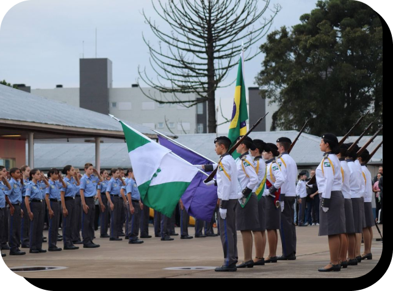

Sobre
O 6º CPM tem como finalidades ministrar os anos finais do Ensino Fundamental e Médio, priorizando alunos dependentes de Policiais e Bombeiros Militares do Paraná.
Baseia-se nos princípios educacionais da Lei nº 9.394/96, com ênfase no desenvolvimento humano integral e relações humanas respeitosas.
Prioriza o acesso de dependentes de militares, promove a participação democrática, e valoriza ética, cidadania e solidariedade.
Proporciona formação acadêmica, cultural e esportiva de qualidade, incluindo noções de disciplina militar e hierarquia.
